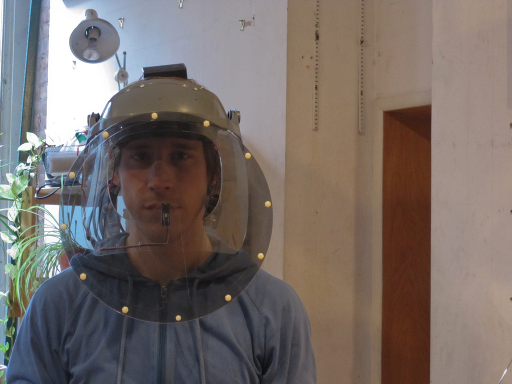
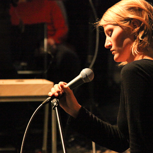

people doing strange things with electricity
The 3g3s-th dorkbot-nyc meeting took place at 7pm on Wednesday, March 3rd, 2010 at Location One in SoHo.
The meeting was free and open to the public. People brought snacks to share. YUMM.
We played a new theme song by Evan Rappaport!
It Featured the lobe-toed and precocial:

Eric Mika, Arturo Vidich, Sofy Yuditskaya: Mental Block
The faces of brain-reading headset wearers are selectively revealed based on the relative alignment of their brainwaves. People gaze at each other through a rotating polarized lens filter. If you and another person are on the same wavelength, the visual path between the two of you will be clear - but if you are on different wavelengths, faces will be obscured.
http://mentalblock.net
Lesley Flanigan: Amplifications
Lesley Flanigan is a New York-based sound sculptor, composer, vocalist, and performer. At Dorkbot, Lesley will discuss her work with speaker feedback, where she explores the physical acoustics of electronic sound by turning basic loudspeakers into musical instruments. ArtsCriticATL writes, "Flanigan's performance comes loaded with philosophical ideas, often blurring the boundaries among music, noise, sculpture and performance art." Crafted from found speaker components and wood, her instruments afford a delicate tangibility to electronic sound. Drawing from her background in sculpture and music, she layers waves of tones from her speakers with her own voice, shaping sound as a fragile mass. Her feedback compositions are the subject of her 2009 album, Amplifications.
http://www.lesleyflanigan.com
And a preview of "You're Playing It Wrong: Creative Misuse of Musical Instruments" at 92YTribeca on March 11th!
Next meeting: 07 April 2010!